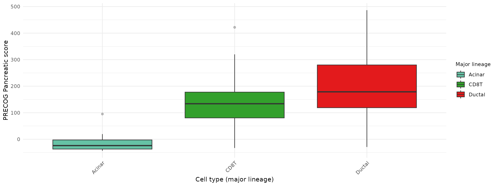
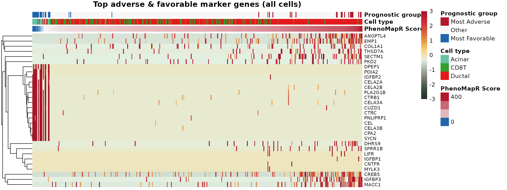
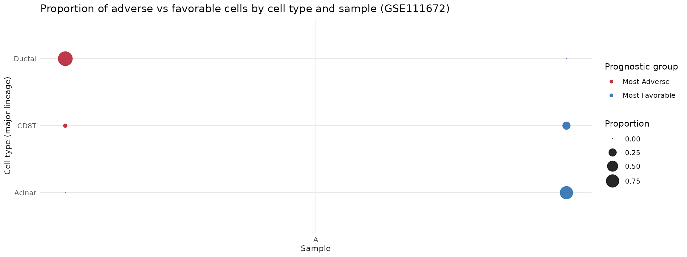
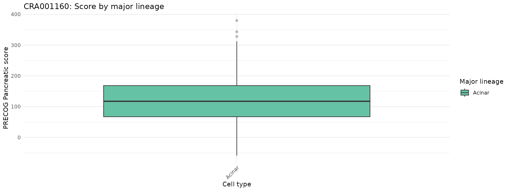
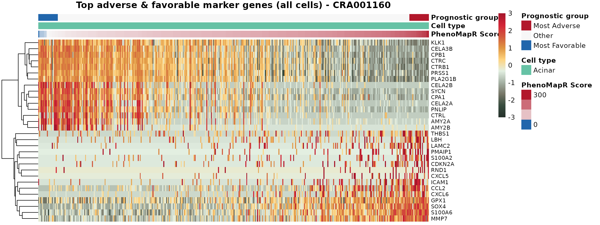
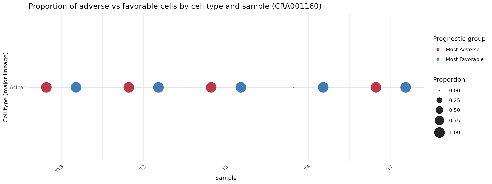

Scoring single-cell data with PhenoMapR
Source:vignettes/gse111672-single-cell.Rmd
gse111672-single-cell.RmdOverview
This vignette demonstrates using PhenoMapR on single-cell pancreatic adenocarcinoma (PAAD) data. It uses the PRECOG primary pancreatic reference to score cells for prognostic expression, defines adverse vs. favorable prognostic groups, identifies marker genes of the most prognostic cells, and visualizes results by cell type and sample. The workflow is shown for two datasets: GSE111672 and CRA001160.
Example 1: PAAD GSE111672 (~6k cells)
GSE111672 integrates microarray-based spatial transcriptomics and single-cell RNA-seq from the same pancreatic tumor samples to reveal tissue architecture in pancreatic ductal adenocarcinomas (Moncada et al., Nature Biotechnology 2020). The dataset combines spatial transcriptomics (arrays of spots capturing gene expression from multiple adjacent cells) with scRNA-seq to map cellular composition across tissue regions. The preprocessed Seurat object includes ~6k cells with annotations such as major lineage, sample, and cluster.
Load and setup
Load PhenoMapR and set consistent cell type colors between the two datsets.
suppressPackageStartupMessages(library(PhenoMapR))
suppressPackageStartupMessages(library(Seurat))
knitr::opts_chunk$set(fig.width = 12, out.width = "100%")
# Timing and memory helper
report_timing <- function(step_name, t0, obj = NULL) {
elapsed <- as.numeric(difftime(Sys.time(), t0, units = "secs"))
mem_mb <- if (!is.null(obj)) format(object.size(obj), units = "MB") else "-"
message(sprintf("[%s] Runtime: %.2f s | Memory: %s", step_name, elapsed, mem_mb))
}
# Vignette data: local paths, then Google Drive (https://drive.google.com/drive/folders/1rKGZBX7sa_Iq8AJb1wcxiRc3oD6v6B5n)
rds_subset <- system.file("extdata/vignette_subsets/PAAD_GSE111672_seurat_subset.rds", package = "PhenoMapR")
use_subset <- nzchar(Sys.getenv("CI", "")) || nzchar(Sys.getenv("PKGDOWN_DEV_MODE", ""))
rds_path <- if (use_subset && file.exists(rds_subset)) rds_subset else "vignettes/PAAD_GSE111672_seurat.rds"
if (!file.exists(rds_path)) rds_path <- "Vignettes/PAAD_GSE111672_seurat.rds"
if (!file.exists(rds_path)) rds_path <- "PAAD_GSE111672_seurat.rds"
if (!file.exists(rds_path) && !nzchar(Sys.getenv("CI", "")) && requireNamespace("googledrive", quietly = TRUE)) {
googledrive::drive_deauth()
googledrive::drive_download(googledrive::as_id("1vJxIlW_kvqFXOPw9qn1L7D6QbMpe-P0c"), rds_path, overwrite = TRUE)
}
if (!file.exists(rds_path)) {
url <- Sys.getenv("PHENOMAPR_GSE111672_RDS_URL", "")
if (nzchar(url)) tryCatch({ download.file(url, rds_path, mode = "wb", quiet = TRUE) }, error = function(e) NULL)
}
has_data <- file.exists(rds_path)
knitr::opts_chunk$set(eval = has_data)
if (!has_data) {
message("PAAD_GSE111672_seurat.rds not found. See Vignettes/README.md for download instructions.")
} else {
t0 <- Sys.time()
seurat <- PhenoMapR::load_rds_fast(rds_path)
report_timing("Load GSE111672", t0, seurat)
# Load CRA001160 early if available (for shared cell type palette alignment)
rds_subset2 <- system.file("extdata/vignette_subsets/PAAD_CRA001160_seurat_subset.rds", package = "PhenoMapR")
rds_path2 <- if (use_subset && file.exists(rds_subset2)) rds_subset2 else "vignettes/PAAD_CRA001160_seurat.rds"
if (!file.exists(rds_path2)) rds_path2 <- "Vignettes/PAAD_CRA001160_seurat.rds"
if (!file.exists(rds_path2)) rds_path2 <- "PAAD_CRA001160_seurat.rds"
if (!file.exists(rds_path2) && !nzchar(Sys.getenv("CI", "")) && requireNamespace("googledrive", quietly = TRUE)) {
googledrive::drive_deauth()
googledrive::drive_download(googledrive::as_id("14p_fYIFeuuRdXBF3J-5ZsXElq_mduSzb"), rds_path2, overwrite = TRUE)
}
if (!file.exists(rds_path2)) {
url2 <- Sys.getenv("PHENOMAPR_CRA001160_RDS_URL", "")
if (nzchar(url2)) tryCatch({ download.file(url2, rds_path2, mode = "wb", quiet = TRUE) }, error = function(e) NULL)
}
if (file.exists(rds_path2)) {
seurat2 <- PhenoMapR::load_rds_fast(rds_path2)
} else {
seurat2 <- NULL
}
# Shared cell type palette: same colors for same cell types across both datasets
celltype_col <- "Celltype..major.lineage."
all_celltypes <- sort(unique(c(
as.character(seurat@meta.data[[celltype_col]]),
if (!is.null(seurat2)) as.character(seurat2@meta.data[[celltype_col]]) else character(0)
)))
shared_pal_lineage <- PhenoMapR::get_celltype_palette(all_celltypes)
n_genes <- nrow(seurat)
n_cells <- ncol(seurat)
n_samples <- if ("Sample" %in% names(seurat@meta.data)) length(unique(seurat@meta.data$Sample)) else NA
message(sprintf("Genes: %d | Cells: %d | Samples: %s", n_genes, n_cells, if (is.na(n_samples)) "N/A" else n_samples))
}## [Load GSE111672] Runtime: 0.40 s | Memory: 24.1 Mb## Genes: 1500 | Cells: 6122 | Samples: 3Score cells
Apply PhenoMapR to the GSE111672 Seurat object using the built-in Pancreatic Primary Meta-z scores from PRECOG 2.0. THen add these scores as metadata to the original Seurat object.
# Score with PRECOG primary pancreatic reference
scores_primary <- PhenoMap(
expression = seurat,
reference = "precog",
cancer_type = "Pancreatic",
assay = "RNA",
slot = "data",
verbose = TRUE
)## Detected input type: seurat## 624 genes used for scoring against PancreaticCalculating scores...
## Completed scoring for Pancreatic
seurat <- add_scores_to_seurat(seurat, scores_primary)## Added 1 score column(s) to Seurat metadata
# Sanity check: malignant cells should score higher (more adverse) than Acinar
score_col <- grep("weighted_sum_score", names(scores_primary), value = TRUE)[1]
mal_cells <- rownames(seurat@meta.data)[seurat@meta.data[[celltype_col]] == "Malignant"]
acin_cells <- rownames(seurat@meta.data)[seurat@meta.data[[celltype_col]] == "Acinar"]
med_mal <- median(scores_primary[mal_cells, score_col], na.rm = TRUE)
med_acin <- median(scores_primary[acin_cells, score_col], na.rm = TRUE)
if (!is.na(med_mal) && !is.na(med_acin) && med_mal < med_acin) {
warning("Score direction may be inverted: Malignant median (", round(med_mal, 1),
") < Acinar median (", round(med_acin, 1),
"). Reinstall PhenoMapR from source.")
}Score by cell type
PhenoMapR score distribution across the different cell types reported in the study. We see that the Malignant calls and Proliferating T-cells are the most associated with an adverse prognostic signature in PAAD, while Acinar cells are by far the most associated with more favorable outcomes signatures in PAAD.
suppressPackageStartupMessages(library(ggplot2))
t0 <- Sys.time()
df <- seurat@meta.data
score_col <- "weighted_sum_score_Pancreatic"
pal_lineage <- shared_pal_lineage[intersect(names(shared_pal_lineage), unique(as.character(df[[celltype_col]])))]
# Boxplot of Pancreatic score by major lineage
if (celltype_col %in% names(df)) {
ggplot(df, aes(
x = reorder(.data[[celltype_col]], .data[[score_col]], FUN = median),
y = .data[[score_col]],
fill = .data[[celltype_col]]
)) +
geom_boxplot(outlier.alpha = 0.3) +
scale_fill_manual(values = pal_lineage, name = "Major lineage") +
theme_minimal() +
theme(
axis.text.x = element_text(angle = 45, hjust = 1),
legend.position = "right",
legend.title = element_text(size = 9)
) +
labs(y = "PRECOG Pancreatic score", x = "Cell type (major lineage)")
} else {
ggplot(df, aes(x = seurat_clusters, y = .data[[score_col]], fill = factor(seurat_clusters))) +
geom_boxplot(outlier.alpha = 0.3) +
scale_fill_brewer(palette = "Set3", name = "Cluster") +
theme_minimal() +
theme(axis.text.x = element_text(angle = 45, hjust = 1), legend.position = "none") +
labs(y = "PRECOG Pancreatic score", x = "Cluster")
}
Prognostic markers
We next identify the marker genes for the most phenotypically associated cell types nominated by PhenoMapR:
# Optional: install presto for much faster FindMarkers (Seurat uses it automatically)
if (!requireNamespace("presto", quietly = TRUE) && requireNamespace("devtools", quietly = TRUE)) {
devtools::install_github("immunogenomics/presto")
}
t0 <- Sys.time()
scores_df <- seurat@meta.data[, grep("weighted_sum_score", names(seurat@meta.data)), drop = FALSE]
# Define groups by 5th/95th percentile: Most Adverse (top 5%), Most Favorable (bottom 5%), Other
groups <- define_prognostic_groups(scores_df, percentile = 0.05)
seurat <- AddMetaData(seurat, groups)
group_col <- grep("prognostic_group", names(seurat@meta.data), value = TRUE)[1]
markers <- NULL
if (!is.na(group_col)) {
markers <- find_prognostic_markers(
seurat,
group_labels = seurat@meta.data[[group_col]],
group_column = NULL,
assay = "RNA",
slot = "data"
)
if (!is.null(markers)) {
head(markers$adverse_markers)
head(markers$favorable_markers)
}
}## Using Seurat FindMarkers: Most Adverse n=307, Most Favorable n=307## Subsampled Other from 5508 to 5000 cells (memory limit)## p_val avg_log2FC pct_in_group pct_rest gene p_adj
## 1 1.696027e-40 -1.833010 0.283 0.711 TM4SF1 2.544040e-37
## 2 5.184862e-38 -2.338469 0.156 0.581 TACSTD2 7.777293e-35
## 3 6.879721e-30 -1.758484 0.208 0.578 GPRC5A 1.031958e-26
## 4 4.257881e-29 -1.356076 0.329 0.700 SAT1 6.386822e-26
## 5 2.345627e-28 -1.731971 0.352 0.685 CLDN4 3.518441e-25
## 6 2.953036e-28 -2.190502 0.088 0.431 PLAUR 4.429555e-25
report_timing("Marker analysis GSE111672", t0)## [Marker analysis GSE111672] Runtime: 0.97 s | Memory: -Marker heatmap
Here we visualize the top 15 marker genes per adverse and favorable phenotypes. Columns are ordered by increasing PhenoMapR score.
n_top <- 15
# GetAssayData: use 'layer' in Seurat v5+, 'slot' in v4
expr <- tryCatch(
Seurat::GetAssayData(seurat, layer = "data", assay = "RNA"),
error = function(e) Seurat::GetAssayData(seurat, slot = "data", assay = "RNA")
)
# Top 15 positively expressed marker genes for adverse and favorable (avg_log2FC > 0)
adverse_pos <- markers$adverse_markers[markers$adverse_markers$avg_log2FC > 0, ]
favorable_pos <- markers$favorable_markers[markers$favorable_markers$avg_log2FC > 0, ]
top_genes <- c(
head(adverse_pos$gene[order(adverse_pos$p_adj)], n_top),
head(favorable_pos$gene[order(favorable_pos$p_adj)], n_top)
)
top_genes <- unique(top_genes[top_genes %in% rownames(expr)])
if (length(top_genes) == 0) top_genes <- head(rownames(expr), 20)
mat <- as.matrix(expr[top_genes, , drop = FALSE])
# Row-scale for visualization; clip to [-3, 3] for consistent color scale
mat_scaled <- t(scale(t(mat)))
mat_scaled[mat_scaled < -3] <- -3
mat_scaled[mat_scaled > 3] <- 3
# Order columns: smallest PhenoMapR score on left, largest on right
meta <- seurat@meta.data
meta$cell_id <- colnames(seurat)
ord <- order(meta[[score_col]])
mat_scaled <- mat_scaled[, ord, drop = FALSE]
meta_ord <- meta[ord, ]
# Column annotations: PhenoMapR Score (continuous), cell type, prognostic group
score_vals <- meta_ord[[score_col]]
ann_col <- data.frame(
`PhenoMapR Score` = score_vals,
`Cell type` = factor(meta_ord[["Celltype..major.lineage."]]),
`Prognostic group` = factor(meta_ord[[group_col]], levels = c("Most Adverse", "Other", "Most Favorable")),
check.names = FALSE
)
rownames(ann_col) <- colnames(mat_scaled)
# PhenoMapR Score palette: blue only for negative, red only for positive, white at 0
score_min <- min(score_vals)
score_max <- max(score_vals)
n <- 100
if (score_min >= 0) {
pal_score <- colorRampPalette(c("#F7F7F7", "#B2182B"))(n)
} else if (score_max <= 0) {
pal_score <- colorRampPalette(c("#2166AC", "#F7F7F7"))(n)
} else {
total_range <- score_max - score_min
n_neg <- max(1, round(n * (0 - score_min) / total_range))
n_pos <- n - n_neg + 1
pal_score <- c(
colorRampPalette(c("#2166AC", "#F7F7F7"))(n_neg),
colorRampPalette(c("#F7F7F7", "#B2182B"))(n_pos)[-1]
)
}
pal_group <- c(`Most Adverse` = "#B2182B", Other = "#F7F7F7", `Most Favorable` = "#2166AC")
pal_celltype <- shared_pal_lineage[intersect(names(shared_pal_lineage), as.character(ann_col$`Cell type`))]
ann_colors <- list(
`PhenoMapR Score` = pal_score,
`Cell type` = pal_celltype,
`Prognostic group` = pal_group
)
# Plot heatmap (genes = rows, cells = columns): Vendedora fill, scale limits ±3
heatmap_breaks <- seq(-3, 3, length.out = 101)
heatmap_colors <- if (requireNamespace("paletteer", quietly = TRUE)) {
colorRampPalette(paletteer::paletteer_d("MexBrewer::Vendedora"))(100)
} else {
colorRampPalette(c("#2166AC", "#F7F7F7", "#B2182B"))(100)
}
if (requireNamespace("pheatmap", quietly = TRUE)) {
pheatmap::pheatmap(
mat_scaled,
scale = "none",
cluster_cols = FALSE,
cluster_rows = TRUE,
show_colnames = FALSE,
annotation_col = ann_col,
annotation_colors = ann_colors,
color = heatmap_colors,
breaks = heatmap_breaks,
main = "Top adverse & favorable marker genes (all cells)",
fontsize_row = 8
)
} else {
heatmap(mat_scaled, scale = "none", Colv = NA, col = heatmap_colors,
labCol = FALSE, main = "Top marker genes (all cells)")
}
report_timing("Heatmap GSE111672", t0)## [Heatmap GSE111672] Runtime: 2.05 s | Memory: -Proportion by sample and cell type
Because many datasets are composed of multiple samples with potentially different attributes, we can look at if the phenotype-relevant cells from the dataset are enriched in a specific sample. Additionally, we can determine the proportion of PhenoMapR identified cells per sample are skewed to specific cell types:
# Use Sample as sample ID (or Patient if Sample missing)
sample_col <- if ("Sample" %in% names(seurat@meta.data)) "Sample" else "Patient"
meta_plot <- seurat@meta.data
meta_plot$sample <- meta_plot[[sample_col]]
meta_plot$cell_type <- meta_plot[[celltype_col]]
meta_plot$prognostic_grp <- meta_plot[[group_col]]
# Restrict to Most Adverse and Most Favorable
meta_plot <- meta_plot[meta_plot$prognostic_grp %in% c("Most Adverse", "Most Favorable"), ]
meta_plot$sample <- factor(meta_plot$sample)
meta_plot$cell_type <- factor(meta_plot$cell_type)
if (nrow(meta_plot) > 0) {
counts <- as.data.frame(table(meta_plot$sample, meta_plot$cell_type, meta_plot$prognostic_grp, dnn = c("sample", "cell_type", "pg")))
totals <- aggregate(counts$Freq, by = list(sample = counts$sample, pg = counts$pg), FUN = sum)
names(totals)[3] <- "total"
counts <- merge(counts, totals, by = c("sample", "pg"))
counts$proportion <- counts$Freq / counts$total
counts$proportion[counts$total == 0] <- 0
sample_lev <- levels(counts$sample)
counts$x_num <- as.numeric(counts$sample) + ifelse(counts$pg == "Most Adverse", -0.18, 0.18)
print(ggplot(counts, aes(x = x_num, y = cell_type, size = proportion, color = pg)) +
geom_point(alpha = 0.85) +
scale_color_manual(values = c(`Most Adverse` = "#B2182B", `Most Favorable` = "#2166AC"), name = "Prognostic group") +
scale_size_continuous(range = c(0, 8), name = "Proportion") +
scale_x_continuous(breaks = seq_along(sample_lev), labels = sample_lev) +
theme_minimal() +
theme(panel.grid.major.y = element_line(color = "grey90"), axis.title = element_text(size = 10), legend.position = "right") +
labs(x = "Sample", y = "Cell type (major lineage)", title = "Proportion of adverse vs favorable cells by cell type and sample (GSE111672)"))
} else {
message("No Most Adverse or Most Favorable cells found; proportion plot skipped")
}
report_timing("Proportion plot GSE111672", t0)## [Proportion plot GSE111672] Runtime: 3.03 s | Memory: -Example 2: PAAD CRA001160 (~57k cells)
CRA001160 (GSA/CNCB-NGDC) is a single-cell RNA-seq dataset of pancreatic ductal adenocarcinoma from Peng et al. (Cell Research 2019). It profiles ~57k cells from primary PDAC tumors and control pancreases, highlighting intra-tumoral heterogeneity and malignant progression. The larger cohort enables robust prognostic group and marker analyses across cell types.
Load CRA001160 dataset
if (is.null(seurat2)) {
rds_path2 <- "vignettes/PAAD_CRA001160_seurat.rds"
if (!file.exists(rds_path2)) rds_path2 <- "Vignettes/PAAD_CRA001160_seurat.rds"
if (!file.exists(rds_path2)) rds_path2 <- "PAAD_CRA001160_seurat.rds"
if (!file.exists(rds_path2) && !nzchar(Sys.getenv("CI", "")) && requireNamespace("googledrive", quietly = TRUE)) {
googledrive::drive_deauth()
googledrive::drive_download(googledrive::as_id("14p_fYIFeuuRdXBF3J-5ZsXElq_mduSzb"), rds_path2, overwrite = TRUE)
}
if (!file.exists(rds_path2)) {
url2 <- Sys.getenv("PHENOMAPR_CRA001160_RDS_URL", "")
if (nzchar(url2)) tryCatch({ download.file(url2, rds_path2, mode = "wb", quiet = TRUE) }, error = function(e) NULL)
}
if (file.exists(rds_path2)) {
t0 <- Sys.time()
seurat2 <- PhenoMapR::load_rds_fast(rds_path2)
report_timing("Load CRA001160", t0, seurat2)
}
}
if (!is.null(seurat2)) {
dim(seurat2)
head(colnames(seurat2@meta.data))
} else {
message("PAAD_CRA001160_seurat.rds not found; Example 2 skipped.")
}## [1] "orig.ident" "nCount_RNA" "nFeature_RNA" "RNA_snn_res.0.6"
## [5] "seurat_clusters" "Database"Score cells (CRA001160)
if (!is.null(seurat2)) {
t0 <- Sys.time()
scores2 <- PhenoMap(
expression = seurat2,
reference = "precog",
cancer_type = "Pancreatic",
assay = "RNA",
slot = "data",
verbose = TRUE
)
seurat2 <- add_scores_to_seurat(seurat2, scores2)
report_timing("Score CRA001160", t0, seurat2)
}## Detected input type: seurat## 614 genes used for scoring against PancreaticCalculating scores...
## Completed scoring for Pancreatic## Added 1 score column(s) to Seurat metadata## [Score CRA001160] Runtime: 0.66 s | Memory: 349.2 MbScore by cell type (CRA001160)
if (is.null(seurat2)) {
message("CRA001160 data not loaded; skipping.")
} else {
t0 <- Sys.time()
df2 <- seurat2@meta.data
score_col2 <- "weighted_sum_score_Pancreatic"
celltype_col2 <- "Celltype..major.lineage."
pal_lineage2 <- shared_pal_lineage[intersect(names(shared_pal_lineage), unique(as.character(df2[[celltype_col2]])))]
if (celltype_col2 %in% names(df2)) {
print(ggplot(df2, aes(
x = reorder(.data[[celltype_col2]], .data[[score_col2]], FUN = median),
y = .data[[score_col2]],
fill = .data[[celltype_col2]]
)) +
geom_boxplot(outlier.alpha = 0.3) +
scale_fill_manual(values = pal_lineage2, name = "Major lineage") +
theme_minimal() +
theme(axis.text.x = element_text(angle = 45, hjust = 1), legend.position = "right") +
labs(y = "PRECOG Pancreatic score", x = "Cell type", title = "CRA001160: Score by major lineage"))
} else {
print(ggplot(df2, aes(x = seurat_clusters, y = .data[[score_col2]], fill = factor(seurat_clusters))) +
geom_boxplot(outlier.alpha = 0.3) +
scale_fill_brewer(palette = "Set3", name = "Cluster") +
theme_minimal() +
theme(axis.text.x = element_text(angle = 45, hjust = 1), legend.position = "none") +
labs(y = "PRECOG Pancreatic score", x = "Cluster", title = "CRA001160"))
}
report_timing("Cell type plot CRA001160", t0)
}
## [Cell type plot CRA001160] Runtime: 0.38 s | Memory: -Prognostic markers (CRA001160)
if (is.null(seurat2)) {
message("CRA001160 data not loaded; skipping.")
} else {
t0 <- Sys.time()
scores_df2 <- seurat2@meta.data[, grep("weighted_sum_score", names(seurat2@meta.data)), drop = FALSE]
groups2 <- define_prognostic_groups(scores_df2, percentile = 0.05)
seurat2 <- AddMetaData(seurat2, groups2)
group_col2 <- grep("prognostic_group", names(seurat2@meta.data), value = TRUE)[1]
markers2 <- NULL
if (!is.na(group_col2)) {
markers2 <- find_prognostic_markers(
seurat2,
group_labels = seurat2@meta.data[[group_col2]],
group_column = NULL,
assay = "RNA",
slot = "data",
max_cells_per_ident = 5000L
)
if (!is.null(markers2)) {
head(markers2$adverse_markers)
head(markers2$favorable_markers)
}
}
report_timing("Marker analysis CRA001160", t0)
}## Using Seurat FindMarkers: Most Adverse n=2873, Most Favorable n=2873## Subsampled Other from 51697 to 5000 cells (memory limit)## [Marker analysis CRA001160] Runtime: 2.21 s | Memory: -Marker heatmap (CRA001160)
if (is.null(seurat2) || is.null(markers2)) {
message("CRA001160 data or markers not available; skipping heatmap.")
} else {
t0 <- Sys.time()
n_top <- 15
expr2 <- tryCatch(
Seurat::GetAssayData(seurat2, layer = "data", assay = "RNA"),
error = function(e) Seurat::GetAssayData(seurat2, slot = "data", assay = "RNA")
)
adverse_pos2 <- markers2$adverse_markers[markers2$adverse_markers$avg_log2FC > 0, ]
favorable_pos2 <- markers2$favorable_markers[markers2$favorable_markers$avg_log2FC > 0, ]
top_genes2 <- c(
head(adverse_pos2$gene[order(adverse_pos2$p_adj)], n_top),
head(favorable_pos2$gene[order(favorable_pos2$p_adj)], n_top)
)
top_genes2 <- unique(top_genes2[top_genes2 %in% rownames(expr2)])
if (length(top_genes2) == 0) top_genes2 <- head(rownames(expr2), 20)
mat2 <- as.matrix(expr2[top_genes2, , drop = FALSE])
mat_scaled2 <- t(scale(t(mat2)))
mat_scaled2[mat_scaled2 < -3] <- -3
mat_scaled2[mat_scaled2 > 3] <- 3
meta2 <- seurat2@meta.data
meta2$cell_id <- colnames(seurat2)
ord2 <- order(meta2[[score_col2]])
mat_scaled2 <- mat_scaled2[, ord2, drop = FALSE]
meta_ord2 <- meta2[ord2, ]
score_vals2 <- meta_ord2[[score_col2]]
q_lo2 <- quantile(score_vals2, 0.05, na.rm = TRUE)
q_hi2 <- quantile(score_vals2, 0.95, na.rm = TRUE)
prognostic_grp2 <- rep("Other", length(score_vals2))
prognostic_grp2[!is.na(score_vals2) & score_vals2 <= q_lo2] <- "Most Favorable"
prognostic_grp2[!is.na(score_vals2) & score_vals2 >= q_hi2] <- "Most Adverse"
ann_col2 <- data.frame(
`PhenoMapR Score` = score_vals2,
`Cell type` = factor(meta_ord2[[celltype_col2]]),
`Prognostic group` = factor(prognostic_grp2, levels = c("Most Adverse", "Other", "Most Favorable")),
check.names = FALSE
)
rownames(ann_col2) <- colnames(mat_scaled2)
score_min2 <- min(score_vals2)
score_max2 <- max(score_vals2)
n2 <- 100
if (score_min2 >= 0) {
pal_score2 <- colorRampPalette(c("#F7F7F7", "#B2182B"))(n2)
} else if (score_max2 <= 0) {
pal_score2 <- colorRampPalette(c("#2166AC", "#F7F7F7"))(n2)
} else {
total_range2 <- score_max2 - score_min2
n_neg2 <- max(1, round(n2 * (0 - score_min2) / total_range2))
n_pos2 <- n2 - n_neg2 + 1
pal_score2 <- c(
colorRampPalette(c("#2166AC", "#F7F7F7"))(n_neg2),
colorRampPalette(c("#F7F7F7", "#B2182B"))(n_pos2)[-1]
)
}
pal_group2 <- c(`Most Adverse` = "#B2182B", Other = "#F7F7F7", `Most Favorable` = "#2166AC")
pal_celltype2 <- shared_pal_lineage[intersect(names(shared_pal_lineage), as.character(ann_col2$`Cell type`))]
ann_colors2 <- list(
`PhenoMapR Score` = pal_score2,
`Cell type` = pal_celltype2,
`Prognostic group` = pal_group2
)
heatmap_breaks2 <- seq(-3, 3, length.out = 101)
heatmap_colors2 <- if (requireNamespace("paletteer", quietly = TRUE)) {
colorRampPalette(paletteer::paletteer_d("MexBrewer::Vendedora"))(100)
} else {
colorRampPalette(c("#2166AC", "#F7F7F7", "#B2182B"))(100)
}
if (requireNamespace("pheatmap", quietly = TRUE)) {
pheatmap::pheatmap(
mat_scaled2,
scale = "none",
cluster_cols = FALSE,
cluster_rows = TRUE,
show_colnames = FALSE,
annotation_col = ann_col2,
annotation_colors = ann_colors2,
color = heatmap_colors2,
breaks = heatmap_breaks2,
main = "Top adverse & favorable marker genes (all cells) - CRA001160",
fontsize_row = 8
)
} else {
heatmap(mat_scaled2, scale = "none", Colv = NA, col = heatmap_colors2,
labCol = FALSE, main = "Top marker genes (all cells) - CRA001160")
}
report_timing("Heatmap CRA001160", t0)
}
## [Heatmap CRA001160] Runtime: 6.66 s | Memory: -Proportion by sample and cell type (CRA001160)
if (is.null(seurat2)) {
message("CRA001160 data not available; skipping proportion plot.")
} else {
t0 <- Sys.time()
sample_col2 <- if ("Sample" %in% names(seurat2@meta.data)) "Sample" else "Patient"
meta_plot2 <- seurat2@meta.data
meta_plot2$sample <- meta_plot2[[sample_col2]]
meta_plot2$cell_type <- meta_plot2[[celltype_col2]]
meta_plot2$prognostic_grp <- meta_plot2[[group_col2]]
meta_plot2 <- meta_plot2[meta_plot2$prognostic_grp %in% c("Most Adverse", "Most Favorable"), ]
meta_plot2$sample <- factor(meta_plot2$sample)
meta_plot2$cell_type <- factor(meta_plot2$cell_type)
if (nrow(meta_plot2) > 0) {
counts2 <- as.data.frame(table(meta_plot2$sample, meta_plot2$cell_type, meta_plot2$prognostic_grp, dnn = c("sample", "cell_type", "pg")))
totals2 <- aggregate(counts2$Freq, by = list(sample = counts2$sample, pg = counts2$pg), FUN = sum)
names(totals2)[3] <- "total"
counts2 <- merge(counts2, totals2, by = c("sample", "pg"))
counts2$proportion <- counts2$Freq / counts2$total
counts2$proportion[counts2$total == 0] <- 0
sample_lev2 <- levels(counts2$sample)
counts2$x_num <- as.numeric(counts2$sample) + ifelse(counts2$pg == "Most Adverse", -0.18, 0.18)
print(ggplot(counts2, aes(x = x_num, y = cell_type, size = proportion, color = pg)) +
geom_point(alpha = 0.85) +
scale_color_manual(values = c(`Most Adverse` = "#B2182B", `Most Favorable` = "#2166AC"), name = "Prognostic group") +
scale_size_continuous(range = c(0, 8), name = "Proportion") +
scale_x_continuous(breaks = seq_along(sample_lev2), labels = sample_lev2) +
theme_minimal() +
theme(
panel.grid.major.y = element_line(color = "grey90"),
axis.title = element_text(size = 10),
axis.text.x = element_text(angle = 45, hjust = 1),
legend.position = "right"
) +
labs(x = "Sample", y = "Cell type (major lineage)", title = "Proportion of adverse vs favorable cells by cell type and sample (CRA001160)"))
} else {
message("No Most Adverse or Most Favorable cells found; proportion plot skipped")
}
report_timing("Proportion plot CRA001160", t0)
}
## [Proportion plot CRA001160] Runtime: 0.22 s | Memory: -References
GEO datasets
GSE111672: Moncada R, Barkley D, Wagner F, et al. Integrating microarray-based spatial transcriptomics and single-cell RNA-seq reveals tissue architecture in pancreatic ductal adenocarcinomas. Nature Biotechnology. 2020. https://doi.org/10.1038/s41587-019-0392-8. GEO: GSE111672.
CRA001160: Peng J, Sun B-F, Chen C-Y, et al. Single-cell RNA-seq highlights intra-tumoral heterogeneity and malignant progression in pancreatic ductal adenocarcinoma. Cell Research. 2019. https://doi.org/10.1038/s41422-019-0195-y. GSA: CRA001160.
Reference signatures
- PRECOG 2.0: Benard B, Lalgudi S, et al. PRECOG 2.0: an updated resource of pan-cancer gene-level prognostic meta-z scores. Nucleic Acids Research. 2026. https://academic.oup.com/nar/article/54/D1/D1579/8324954.
Session Info
## R version 4.5.3 (2026-03-11)
## Platform: x86_64-pc-linux-gnu
## Running under: Ubuntu 24.04.3 LTS
##
## Matrix products: default
## BLAS: /usr/lib/x86_64-linux-gnu/openblas-pthread/libblas.so.3
## LAPACK: /usr/lib/x86_64-linux-gnu/openblas-pthread/libopenblasp-r0.3.26.so; LAPACK version 3.12.0
##
## locale:
## [1] LC_CTYPE=C.UTF-8 LC_NUMERIC=C LC_TIME=C.UTF-8
## [4] LC_COLLATE=C.UTF-8 LC_MONETARY=C.UTF-8 LC_MESSAGES=C.UTF-8
## [7] LC_PAPER=C.UTF-8 LC_NAME=C LC_ADDRESS=C
## [10] LC_TELEPHONE=C LC_MEASUREMENT=C.UTF-8 LC_IDENTIFICATION=C
##
## time zone: UTC
## tzcode source: system (glibc)
##
## attached base packages:
## [1] stats graphics grDevices utils datasets methods base
##
## other attached packages:
## [1] ggplot2_4.0.2 Seurat_5.4.0 SeuratObject_5.3.0 sp_2.2-1
## [5] PhenoMapR_0.1.0
##
## loaded via a namespace (and not attached):
## [1] deldir_2.0-4 pbapply_1.7-4 gridExtra_2.3
## [4] rematch2_2.1.2 rlang_1.1.7 magrittr_2.0.4
## [7] RcppAnnoy_0.0.23 otel_0.2.0 spatstat.geom_3.7-0
## [10] matrixStats_1.5.0 ggridges_0.5.7 compiler_4.5.3
## [13] png_0.1-8 systemfonts_1.3.2 vctrs_0.7.1
## [16] reshape2_1.4.5 stringr_1.6.0 pkgconfig_2.0.3
## [19] fastmap_1.2.0 labeling_0.4.3 promises_1.5.0
## [22] rmarkdown_2.30 ragg_1.5.1 fastSave_0.1.0
## [25] purrr_1.2.1 xfun_0.56 cachem_1.1.0
## [28] jsonlite_2.0.0 goftest_1.2-3 later_1.4.8
## [31] spatstat.utils_3.2-2 irlba_2.3.7 parallel_4.5.3
## [34] cluster_2.1.8.2 R6_2.6.1 ica_1.0-3
## [37] spatstat.data_3.1-9 bslib_0.10.0 stringi_1.8.7
## [40] RColorBrewer_1.1-3 reticulate_1.45.0 spatstat.univar_3.1-6
## [43] parallelly_1.46.1 lmtest_0.9-40 jquerylib_0.1.4
## [46] scattermore_1.2 Rcpp_1.1.1 knitr_1.51
## [49] tensor_1.5.1 future.apply_1.20.2 zoo_1.8-15
## [52] sctransform_0.4.3 httpuv_1.6.16 Matrix_1.7-4
## [55] splines_4.5.3 igraph_2.2.2 tidyselect_1.2.1
## [58] abind_1.4-8 yaml_2.3.12 spatstat.random_3.4-4
## [61] spatstat.explore_3.7-0 codetools_0.2-20 miniUI_0.1.2
## [64] listenv_0.10.1 lattice_0.22-9 tibble_3.3.1
## [67] plyr_1.8.9 withr_3.0.2 shiny_1.13.0
## [70] S7_0.2.1 ROCR_1.0-12 evaluate_1.0.5
## [73] Rtsne_0.17 future_1.69.0 fastDummies_1.7.5
## [76] desc_1.4.3 survival_3.8-6 polyclip_1.10-7
## [79] fitdistrplus_1.2-6 pillar_1.11.1 KernSmooth_2.23-26
## [82] plotly_4.12.0 generics_0.1.4 RcppHNSW_0.6.0
## [85] paletteer_1.7.0 scales_1.4.0 globals_0.19.0
## [88] xtable_1.8-8 glue_1.8.0 pheatmap_1.0.13
## [91] lazyeval_0.2.2 tools_4.5.3 data.table_1.18.2.1
## [94] RSpectra_0.16-2 RANN_2.6.2 fs_1.6.7
## [97] dotCall64_1.2 cowplot_1.2.0 grid_4.5.3
## [100] tidyr_1.3.2 nlme_3.1-168 patchwork_1.3.2
## [103] presto_1.0.0 cli_3.6.5 spatstat.sparse_3.1-0
## [106] textshaping_1.0.5 spam_2.11-3 viridisLite_0.4.3
## [109] dplyr_1.2.0 uwot_0.2.4 gtable_0.3.6
## [112] sass_0.4.10 digest_0.6.39 prismatic_1.1.2
## [115] progressr_0.18.0 ggrepel_0.9.7 htmlwidgets_1.6.4
## [118] farver_2.1.2 htmltools_0.5.9 pkgdown_2.2.0
## [121] lifecycle_1.0.5 httr_1.4.8 mime_0.13
## [124] MASS_7.3-65